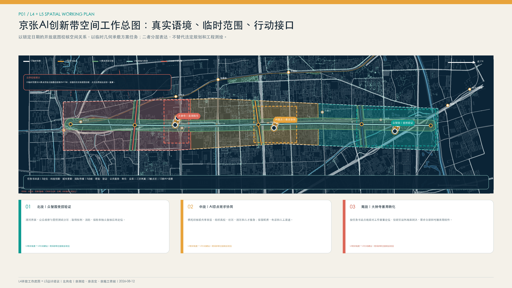
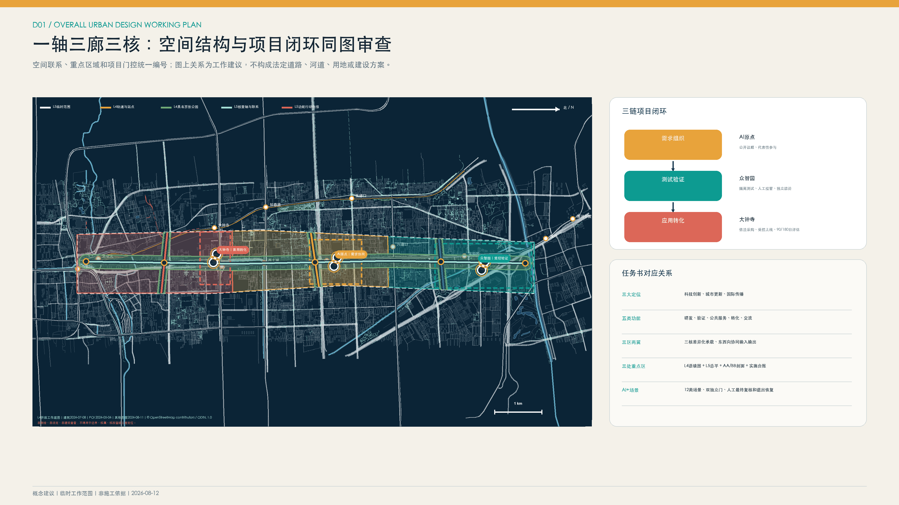
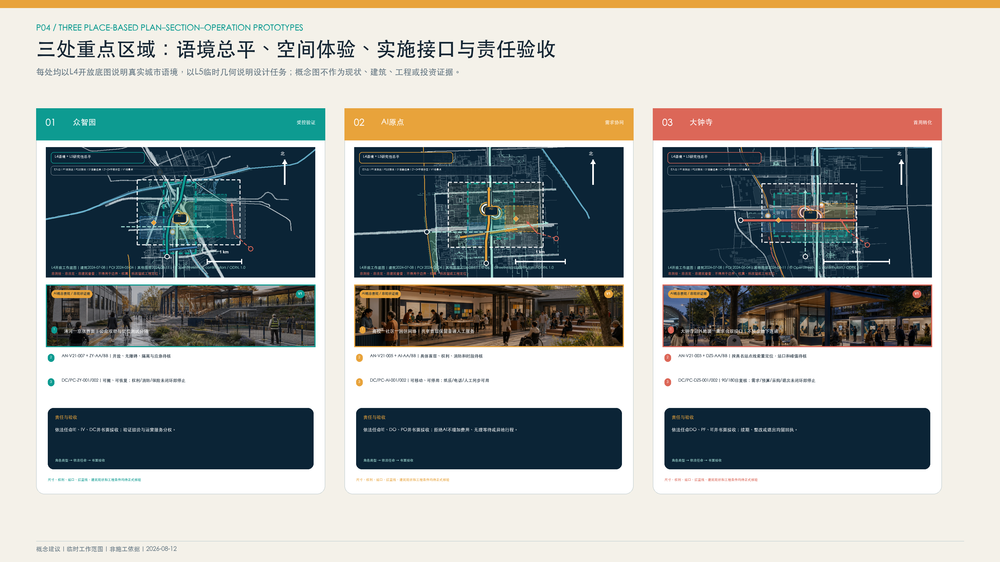
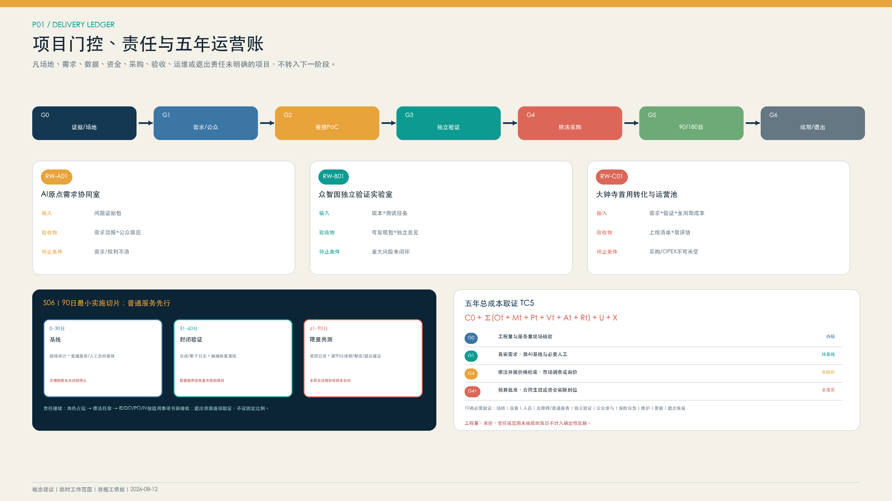
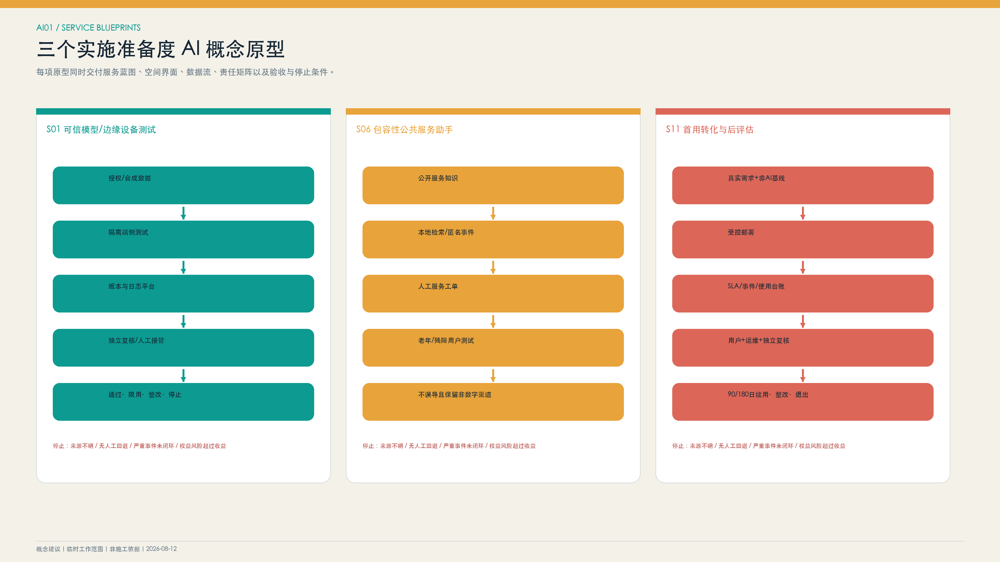
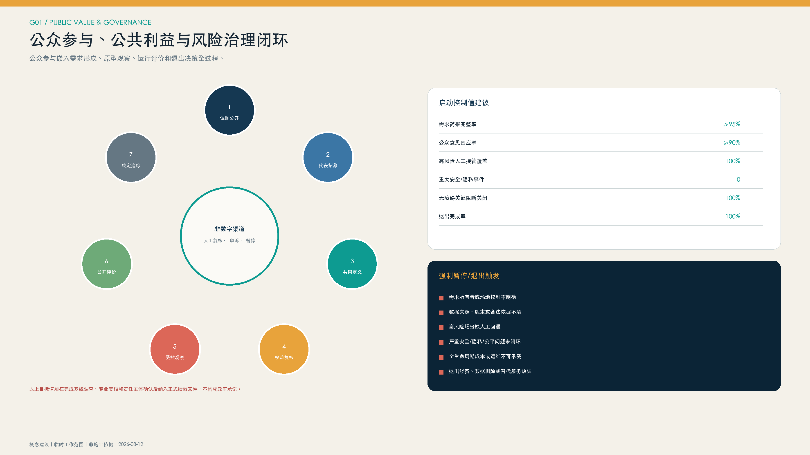
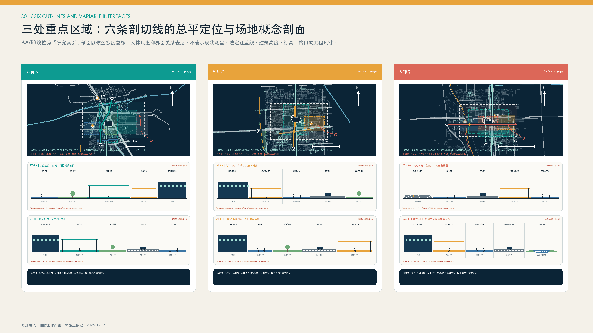
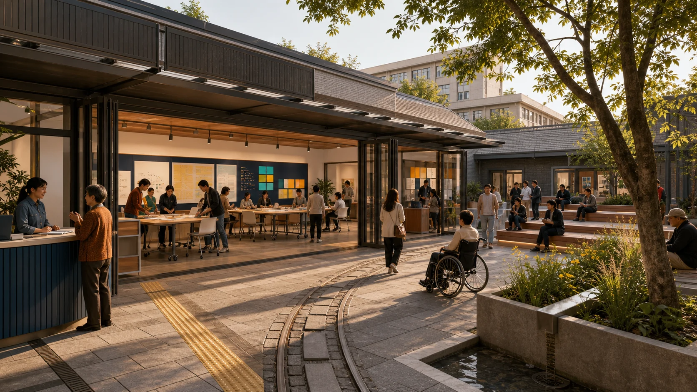
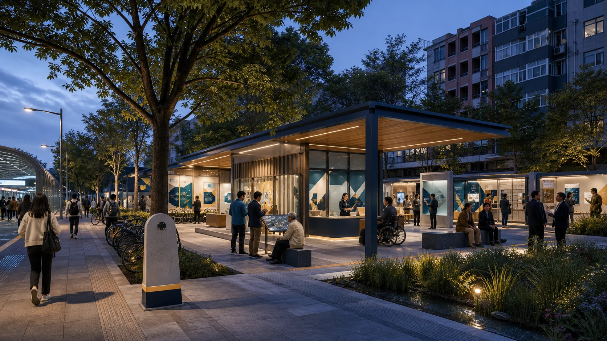

{kind=link}

众智园
AI生成概念表现；不作为现状、场地或工程证据。
以京张公共空间为城市织体，以AI场景为可退出线程，贯通需求组织、独立验证、首用转化和公共利益评价。
AI概念表现 / 非现状证据9个现场核查分段、8个锚点、6组变量剖面；正式边界和现状待核。
空间成熟不替代AI准入；任一门未通过即失败关闭。
证据—责任—工程量—取价—预算—90/180日评价—退出。
不加价、不增加不合理等待或异地行程；保留申诉和退出回执。
以上为提交包和契约完整度，不代表现场绩效、法定指标、政府批准、预算落实或合作承诺。
对象数量表示投稿包结构完整度；运营主体、场地、预算、活动审批、发布许可和合作关系均待依法确认。

图中位置、尺寸和建设条件均为研究建议，须经正式资料和专业核验后确定。

图中位置、尺寸和建设条件均为研究建议，须经正式资料和专业核验后确定。

图中位置、尺寸和建设条件均为研究建议，须经正式资料和专业核验后确定。

图中位置、尺寸和建设条件均为研究建议，须经正式资料和专业核验后确定。

图中位置、尺寸和建设条件均为研究建议，须经正式资料和专业核验后确定。

图中位置、尺寸和建设条件均为研究建议，须经正式资料和专业核验后确定。

图中位置、尺寸和建设条件均为研究建议，须经正式资料和专业核验后确定。

图中位置、尺寸和建设条件均为研究建议，须经正式资料和专业核验后确定。

图中位置、尺寸和建设条件均为研究建议，须经正式资料和专业核验后确定。
AI生成概念表现；不作为现状、场地或工程证据。

AI生成概念表现；不作为现状、场地或工程证据。

AI生成概念表现；不作为现状、场地或工程证据。
页面内容索引：总览地图、三层范围、重点区域、用地分区、交通慢行、蓝绿公共空间、建筑、更新项目、AI 场景、核心指标、任务覆盖、自检状态、来源、假设。
兼容字段 site_area_sqm：11,412,825.386 平方米，仅表示临时工作范围的内部复算值，不是正式用地面积。
兼容字段 green_ratio：0.27789，仅映射概念蓝绿网络包络比，不是法定绿地率。
兼容字段 public_space_ratio：0.005396，仅映射概念行动包络比，不是法定公共空间率或建成量。
自检状态：以 self_check.json 的持久化结果为准。来源：见 sources.json。假设：见 assumptions.json。全部兼容字段均为 L5、非官方、非测绘、非施工数量。